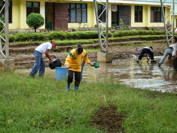
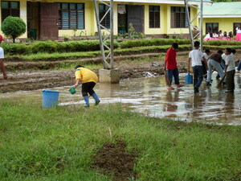

limpiyu  
/limpiu/
Data Qual: does this really mean 'virtuous', or is it only physical?
Data Qual: does this really mean 'smooth' in terms of purely physical texture (e.g. how about something dirty but smooth?)
adj_rt.
“clean”
1.
adj.
clean; smooth
Ka seini iyan sika se warè lelapeken ne baley su amana ne mapanpanlimas ka nangebpè wey ke kandin e iya ne batasan ka kenè egkeupian te malindit.
Amana ne limpiyu ka sapiling en ni Amè.
My father's yard is very clean.
Eng. clean; smooth; immaculate; spotless
Tag. malinis
Ceb. limpyo
Online dict status: -
Usage level: L
vt.
for someone (eglimpiyu, miglimpiyu, inlimpiyu, actor, eg><ø-) to clean something (eglimpiyuwan, inlimpiyuwan, miglimpiyuwan, piglimpiyuwan, location, eg><an-) with something (e.g. water or a cloth) (iglimpiyu, instrument, ig><ø-)
Ka seini iyan sika se eg-aween ka malindit wey egpakasamuk wey mareet ne egtengtengan.
Eglimpiyu sikandin te seeg dan ne in-indesan te asu.
She is cleaning their floor which deficated by a bitch.
Mateles ne eglimpiyuwan ka seeg ney su malurung.
It is good to clean our floor because it's smooth.
Online dict status: -
Usage level: L
2.
adj.
(sabeka ne batek) monochrome; having one color
Ka seini iling te ke sabeka rè ka batek ne egkakita nu amana ne meupiya ne egtengtengan wey kenè ne malindit wey kenè ne mareet ne egtengtengan.
Malimpiyu ne egtengtengan ka baley ke sabeka re ka igbatek ne batek.
The house which having one color is good to look.
Eng. plain; monochrome
Online dict status: -
Usage level: L
v.
3.
adj.
virtuous
Eng. virtuous
Online dict status: -
Usage level: L
Updated by: RJH,QDL,NJK,RJH
Last updated: 08/Jun/2010
This page last updated: 19/May/2012
Copyright © 2009-2010, Matigsalug Language Christian Association, Inc